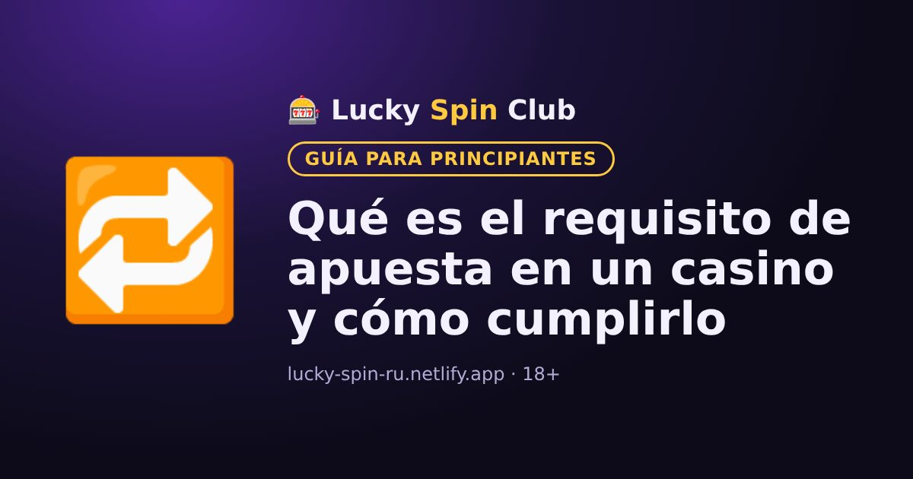

Qué es el requisito de apuesta en un casino y cómo cumplirlo

Casi todos los bonos de casino tienen un requisito de apuesta. Si no lo entiendes de antemano, es fácil perder el bono. Te lo explicamos con ejemplos.
Definición sencilla
El requisito de apuesta indica cuántas veces debes apostar el importe del bono antes de que el dinero del bono se convierta en dinero real que se puede retirar.
Ejemplo
Recibes un bono de 100 $ con requisito x30. El total que debes apostar es 100 × 30 = 3000 $. No significa gastar 3000 $ de tu dinero: cuentan todas las apuestas, también las que haces con ganancias.
A veces el requisito se calcula sobre el bono más el depósito. Con un depósito de 100 $ y un bono de 100 $ a x30 habría que apostar (100 + 100) × 30 = 6000 $. Las condiciones del bono indican cómo se calcula.
Contribución de los juegos
Los juegos cuentan de forma distinta. Las tragamonedas suelen contar al 100 %, y la ruleta, el blackjack y los juegos en vivo, entre el 0 y el 20 % o nada. La lista está en las reglas del bono.
Reglas que debes conocer
- Plazo. El bono debe cumplirse en un tiempo determinado, por ejemplo 7 o 30 días; si no, caduca.
- Apuesta máxima. Mientras el bono está activo, la apuesta no puede superar un límite. Incumplirlo puede anular el bono y las ganancias.
- Retiro máximo. Algunos bonos limitan cuánto se puede retirar tras cumplir el requisito.
¿Vale la pena el bono?
Cuanto menor sea el requisito y mayor el plazo, más fácil es cumplirlo. Si las condiciones no te convienen, puedes rechazar el bono y jugar con tu dinero sin restricciones.
🧮 Calcula tu bono: nuestra calculadora muestra cuánto hay que apostar y si el bono conviene.
Abrir la calculadora¿Quieres probar? El registro toma alrededor de un minuto.
🎁 Registrarse y obtener el bonoPreguntas frecuentes
¿Qué significa un requisito de apuesta x35?
Significa que el importe del bono debe apostarse 35 veces. Para un bono de 100 $ hay que apostar 3500 $ en total.
¿Cuentan todos los juegos para el requisito?
No. Las tragamonedas suelen contar al 100 %, y los juegos de mesa y en vivo, parcialmente o nada. La lista está en las reglas del bono.
¿Qué pasa si no cumplo el requisito a tiempo?
Cuando vence el plazo, el bono y las ganancias asociadas normalmente se pierden.